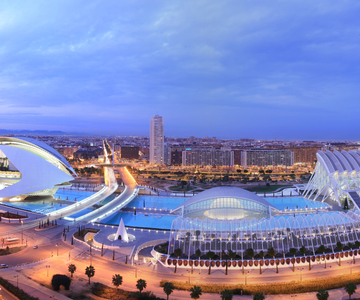
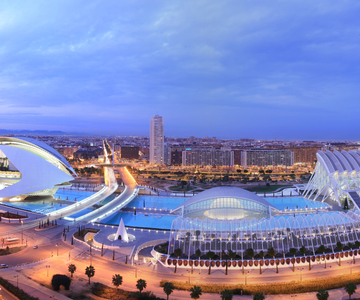
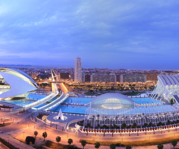

Galería de Imágenes

 

Barcelona: Arquitectura Única: Barcelona es el hogar de obras maestras del modernismo catalán, como la Sagrada Familia, el Parc Güell y la Casa Batlló, diseñadas por el célebre arquitecto Antoni Gaudí. Playas y Clima Mediterráneo: Con un clima agradable casi todo el año y playas urbanas como la Barceloneta, es un destino perfecto para disfrutar de actividades al aire libre. Historia y Cultura: Desde el Barrio Gótico, con sus callejuelas medievales, hasta la influencia romana y la vibrante vida cultural, Barcelona es una mezcla de tradición y modernidad. Gastronomía: Barcelona es un paraíso culinario, con platos como la paella, los mariscos frescos y las famosas tapas. Además, cuenta con restaurantes de renombre mundial. Vida Nocturna y Ocio: La ciudad tiene una animada vida nocturna, con bares, discotecas y eventos culturales que se adaptan a todos los gustos. Ubicación Estratégica: Desde Barcelona, puedes explorar fácilmente otros puntos de interés en Cataluña, como Montserrat, Girona o las hermosas playas de la Costa Brava.
Madrid: Patrimonio Histórico y Arquitectónico: Desde el majestuoso Palacio Real hasta la icónica Plaza Mayor y la Puerta del Sol, Madrid está llena de lugares históricos que narran su rica historia. Arte y Museos de Renombre Mundial: Madrid alberga el famoso Triángulo del Arte, que incluye el Museo del Prado, el Museo Reina Sofía (hogar del "Guernica" de Picasso) y el Museo Thyssen-Bornemisza. Ambiente Animado: Madrid es conocida por su vibrante vida social y su energía. Sus calles siempre están llenas de vida, tanto de día como de noche. Gastronomía Española: Desde los tradicionales bocadillos de calamares en la Plaza Mayor hasta mercados como el Mercado de San Miguel, Madrid es un paraíso para los amantes de la comida. Áreas Verdes y Espacios al Aire Libre: Relájate en el impresionante Parque del Retiro, declarado Patrimonio de la Humanidad, o disfruta de las vistas desde el Templo de Debod. Cultura y Tradiciones: Madrid es el corazón de la cultura española, ofreciendo flamenco, festivales, y eventos tradicionales como las celebraciones en honor a San Isidro. Vida Nocturna: Conocida por su animada vida nocturna, la ciudad ofrece una amplia gama de bares, discotecas y terrazas donde puedes disfrutar hasta altas horas.
Valencia: Ciudad de las Artes y las Ciencias: Este icónico complejo futurista alberga el Oceanogràfic (el acuario más grande de Europa), el Museo de las Ciencias y el Hemisfèric, impresionando con su arquitectura moderna. Playas y Clima Ideal: Valencia ofrece hermosas playas como la Malvarrosa y el Cabanyal, ideales para relajarse bajo el sol del Mediterráneo. Cultura e Historia: Explora el casco antiguo con lugares como la Catedral de Valencia, la Lonja de la Seda (Patrimonio de la Humanidad) y el Barrio del Carmen, lleno de historia y encanto. Gastronomía Famosa: Valencia es la cuna de la paella. No puedes dejar de probar este plato típico mientras visitas la ciudad. Naturaleza y Espacios Verdes: Disfruta del Parque Natural de la Albufera, un lugar perfecto para paseos en barca al atardecer, y el Jardín del Turia, un extenso parque urbano. Fiestas y Tradiciones: Valencia es famosa por las Fallas, declaradas Patrimonio Cultural Inmaterial de la Humanidad, una experiencia única llena de arte, fuego y cultura. Conexión entre lo Antiguo y lo Nuevo: Desde la histórica Torres de Serranos hasta el moderno puerto deportivo, Valencia logra equilibrar su rica historia con un espíritu innovador.
Sevilla: Monumentos Icónicos: Sevilla alberga joyas arquitectónicas como la Catedral de Sevilla (con la famosa Giralda), el espectacular Real Alcázar y la majestuosa Plaza de España. Historia y Cultura: Con un legado que abarca desde la cultura árabe hasta la cristiana, Sevilla ofrece un rico patrimonio histórico reflejado en su casco antiguo y barrios como Triana y Santa Cruz. Esencia del Flamenco: Sevilla es el corazón del flamenco. Puedes disfrutar de este arte en espectáculos auténticos o en peñas tradicionales. Fiestas y Tradiciones: La ciudad brilla durante la Semana Santa y la Feria de Abril, dos celebraciones llenas de color, música y emoción. Gastronomía Andaluza: Deléitate con las tapas en locales típicos, acompañadas de un buen vino o una cerveza fría. ¡No te pierdas el gazpacho o el pescaíto frito! Río Guadalquivir: Disfruta de paseos en barco por el río o simplemente relájate en sus orillas mientras contemplas vistas únicas de la ciudad. Ambiente Cálido: Sevilla es conocida por la hospitalidad de su gente y su vibrante vida en las calles, especialmente en sus terrazas y plazas.
Burgos: Catedral de Burgos: Declarada Patrimonio de la Humanidad por la UNESCO, es una joya del arte gótico y uno de los templos más impresionantes de España. Historia y Patrimonio: Burgos es clave en el Camino de Santiago, con monumentos como el Monasterio de las Huelgas y el Arco de Santa María, que reflejan su rica historia medieval. Museo de la Evolución Humana: Un espacio único que exhibe los hallazgos de Atapuerca, el yacimiento arqueológico cercano que ofrece una visión fascinante de los orígenes de la humanidad. Gastronomía Castellana: Prueba especialidades como el cordero lechal asado y la morcilla de Burgos, acompañados de vinos de la Ribera del Duero. Entorno Natural: Explora el Parque Natural de las Hoces del Río Rudrón y Ebro o pasea por el Paseo del Espolón, un lugar ideal para disfrutar de la tranquilidad. Ambiente Medieval: Su casco antiguo está lleno de calles empedradas, plazas con encanto y una atmósfera que te transporta al pasado.
Zaragoza: Basílica del Pilar: Icono de la ciudad y uno de los mayores centros de peregrinación de España. Su majestuosa arquitectura y las vistas desde sus torres son imperdibles. Historia y Patrimonio: Zaragoza cuenta con vestigios de su pasado romano como el Teatro Romano y las murallas romanas, además de joyas mudéjares como el Palacio de la Aljafería, Patrimonio de la Humanidad. Río Ebro: Disfruta de paseos junto al río Ebro y de vistas espectaculares con la Basílica del Pilar como telón de fondo. Arte y Cultura: La ciudad está llena de arte urbano, museos como el de Goya y una animada agenda cultural para todos los gustos. Gastronomía Aragonesa: Prueba platos típicos como el ternasco asado, los huevos al salmorejo y sus deliciosos postres como el guirlache. Fiestas del Pilar: Si visitas en octubre, podrás disfrutar de las famosas Fiestas del Pilar, llenas de tradición, música y color. Ubicación Estratégica: Situada entre Madrid, Barcelona y Bilbao, Zaragoza es ideal para descubrir otros puntos interesantes del noreste de España.
Santiago de Compostela: Catedral de Santiago: Es el corazón de la ciudad y uno de los lugares más importantes de la cristiandad. Su majestuosa arquitectura y el famoso Pórtico de la Gloria son imperdibles. Destino del Camino de Santiago: Santiago es el punto final de esta histórica ruta de peregrinación, declarada Patrimonio de la Humanidad. Llegar a la plaza del Obradoiro es una experiencia inolvidable. Casco Antiguo: Pasea por sus calles empedradas, llenas de encanto medieval, con plazas como la Plaza del Obradoiro y edificios históricos como el Monasterio de San Martín Pinario. Gastronomía Gallega: Disfruta de especialidades como el pulpo a la gallega, la empanada y la tarta de Santiago, acompañados de vinos de la región como el Albariño. Espiritualidad y Tradición: La ciudad tiene una atmósfera única, ideal para quienes buscan momentos de reflexión o conexión espiritual. Entorno Natural: Santiago está rodeada de paisajes verdes. El Parque de la Alameda ofrece vistas panorámicas de la ciudad, mientras que los alrededores de Galicia son perfectos para explorar. Cultura y Arte: La ciudad cuenta con museos como el Museo de las Peregrinaciones y una vibrante vida cultural, con conciertos, festivales y actividades todo el año.
